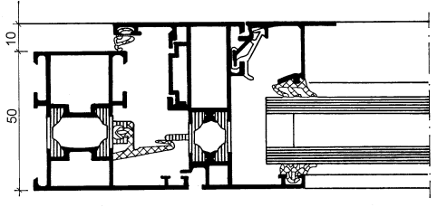
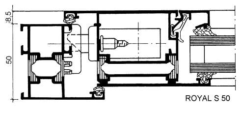
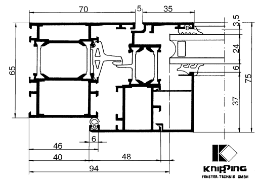
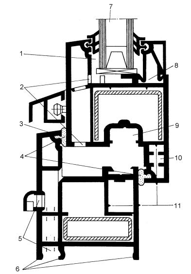

Окна с металлическими блоками.

В строительстве алюминий используется при изготовлении окон, дверей, фасадов. Очень важно то, что алюминий обладает высокой устойчивостью к воздействию окружающей среды и в течение всего многолетнего срока эксплуатации практически не требует ремонта, что доказано почти столетней практикой использования алюминия в строительстве по всему миру.
Металлы – хорошие проводники тепла, поэтому в новых конструкциях профили заполняют вспенивающимися составами. По теплозащитным свойствам алюминиевые окна, как правило, уступают деревянным или пластиковым.
Уход за алюминием довольно прост. Однако при строительстве или ремонте, следует защищать алюминиевые детали от попадания на них раствора, иначе на них могут появиться пятна.
Достоинства окон из алюминия:
• длительный срок службы (минимальный расчетный срок – 80 лет);
• устойчивость против коррозии, деформации и других вредных воздействий окружающей среды;
• отсутствие реакции на воздействие кислот, масел, газов, ультрафиолетового излучения; простота в уходе;
• возможность сохранять свои экологически благоприятные свойства в течение всего срока эксплуатации;
• возможность производства окон очень больших размеров, любых форм и с различными способами открывания.
Недостатки окон из алюминия:
• непосредственный или косвенный контакт алюминия с другими металлами, например, при попадании дождевой воды, может вызвать протекание электролитических реакций, что приводит к сильной электрокоррозии алюминия, вплоть до его разрушения. Особенно опасно сочетание алюминия и меди, из-за чего необходимо избегать их совместного использования,
• по теплозащитным свойствам алюминий уступает деревянным окнам.
На заметку
Алюминий получают из минерального боксита, месторождения которого практически неисчерпаемы. Он является экологически чистым материалом, не содержит примесей тяжелых металлов, не выделяет вредных веществ под воздействием ультрафиолетовых лучей, и сохраняет способность работать в любых климатических условиях при перепадах температур от -8 °C до +10 °C.
Алюминий лучше, чем другие материалы, сохраняет свои структурные свойства при перепадах температур. После обработки поверхности алюминиевых изделий, они становятся устойчивыми к коррозии, вызываемой дождями, снегом, жарой и смогом.
Алюминиевый профиль, как правило, выполняется из трехкомпонентного сплава:
• алюминия, который обеспечивает легкость и элегантный внешний вид;
• магния, который усиливает прочность сплава;
• кремния, повышающего литейные свойства.
Конструкции алюминиевого окнаАлюминиевые окна по конструкции оконного блока могут быть:
• с одинарными переплетами;
• со спаренными переплетами;
• с раздельными переплетами.
Алюминиевые профили могут быть сконструированы по двух– или, чаще всего, трехкамерному принципу. Такая конструкция обеспечивает высокую прочность, статическую надежность и повышает теплоизоляционные характеристики.


Рис. 12. Алюминиевый профиль БАМО-SCHUCO
На сегодняшний день фирмы-производители, выпускающие алюминиевые профили, имеют свои разработанные системы конструкций профилей, которые отличаются в основном геометрическими характеристиками.
На Российском рынке существуют две большие группы профилей.
Профили, имеющие стандартные размеры фурнитурного и рамного пазов, принятые многими фирмами-производителями, – это профили, удовлетворяющие условиям так называемого «европаза».
Эта группа, в свою очередь, делится на два типа, в зависимости от размеров рамного паза:
• V.01 – ширина рамного паза 12–14 мм;
• V.02 – ширина рамного паза 9,7-11,5 мм;
К профилям с размерами фурнитурного и рамного паза нестандартных размеров относятся такие системы, как:
• NEWTEC 50/52/60-68, ALL.Со-5 производства Италии, а также выпускаемая по лицензии в г. Малоярославец (Россия);
• SCHUCO ROYAL 850/65, производство Германии (рис. 12);
Все алюминиевые профили делятся на дверные, оконные, фасадные, витражные и профили специального назначения.
Конструкция системы оконного профиля. В систему оконного профиля входит:
• рамный профиль;
• профиль для створок;
• штапик;
• импостный профиль;
• штульповый профиль.
Такой набор позволяет изготавливать как глухие, одностворчатые, поворотные и поворотно-откидные окна, так и безимпостные и импостные окна. При изготовлении дверей, как обычных, так и балконных, также можно использовать оконные профили. Многими фирмами также разработаны системы раздвижных окон, в том числе и балконных.
Из-за высокой теплопроводности алюминия производители выпускают два вида профилей, отличающихся областями применения:
• «холодный»профиль – профиль без изолирующей термовставки. Он применяется при изготовлении окон для неотапливаемых зданий, или для внутренних отапливаемых помещений;
• «теплый»профиль – профиль с термоизолирующей вставкой. Применяется при изготовлении окон и дверей для отапливаемых жилых и нежилых помещений.

Рис. 13. Алюминиевый профиль фирмы «KNIPPING»
Основные системы «холодных» и «теплых» профилей выпускаются практически всеми фирмами-производителями в нескольких вариантах:
• система оконного профиля;
• система дверного профиля;
• фасадная (витражная) система.
• система оконного профиля;
• система дверного профиля;
• фасадная (витражная) система.
Необходимость в выпуске различных систем профилей для окон и дверей возникла из-за различий |их установочной фурнитуры, такой как замки и т. и., но возможность изготовления балконной двери из оконного профиля сохранилась.
В холодном Российском климате, с продолжительной зимой и низкими температурами, наибольшее применение получили системы «теплых» профилей.
В «теплых» профилях наружная и внутренняя оболочки профиля соединены между собой термомостом или термовставкой (изолирующими планками из армированного стекловолокном полиамида или политермида), которая прерывает поток тепла, обеспечивая, тем самым, лучшую теплоизоляцию с сохранением статических свойств. Ширина термоизолирующей вставки колеблется от 18 до 34 мм в зависимости от фирмы-изготовителя, но она должна быть не менее 20 мм, без учета заделки полиамида в алюминиевый профиль.
Внимание
Иногда камеры профиля между термовставками заполняются на заводе вспенивающимися составами с низкими коэффициентами теплопроводности (HUECK), или жесткими заполнителями камер (Thussen, Reunaers TS-80). Это делается для уменьшения конвективного теплообмена внутри профиля. Для этой же цели иногда вместо этого устанавливают внутри камер перемычки с поперечными отбойными флажками.

Рис. 14. Окно «Pexay алюминиум» типа S702:
1 – створка 22 мм в четверть между переплетом и стеклом; 2 – отверстия для скрытого отвода воды от фальцев остекления; 3 – уплотнение шириной 10 мм; 4 – накладка в створке и раздельной раме; 5 – отвод воды вперед и вниз; 6 – контактные кулачки для примыканий и соединений; 7 – стеклопакет толщиной 3 – 29,5 мм; 8 – гнездо штапика; 9 – паз в переплете; 10 – дополнительные перемычки для жесткости переплета; 11 – ребра жесткости
Конструкция «теплого» профиля позволяет не только выбрать подходящее цветовое решение, но и выбрать форму внешнего и внутреннего профилей, которые выпускаются в нескольких вариантах и отличаются у разных фирм. Так, фирма «Reunaers» в своей системе TS-57 предлагает несколько вариантов внешнего профиля: функциональный, элипспрофиль, ренесанс-профиль и вариант внутреннего профиля Софтлайн.
Уплотнение. Чаще всего в конструкции алюминиевых профилей применяется среднее уплотнение и уплотнение по притвору (внутреннее), что обеспечивает высокие характеристики по ветро-, звуко– и водонепроницаемости. В качестве уплотнителей применяется в основном ЕРОМ (смесь этилена, пропилена и диена-этилпропиленодимономера).
Фурнитура. Современная фурнитура обеспечивает окнам из алюминия любой тип открывания и надежное запирание, в том числе противовзломное.
Фурнитура для алюминиевых окон подразделяется на две большие группы, отличающиеся способом крепления:
• при помощи винтов;
• при помощи специальных зажимных клемм.
Существуют две основные технологии окраски алюминиевых профилей:
• нанесение покрытия гальваническим способом;
• нанесение лакокрасочного покрытия.
На заметку
Гальванический способ позволяет получать прочное, стойкое к атмосферным явлениям, покрытие. Правда, такое производство является вредным. К плюсам такого покрытия можно отнести меньшую его себестоимость, а к минусам – ограниченные возможности по получению нужной цветовой гаммы.
Если необходимо получить уникальный цветовой оттенок покрытия, лучше воспользоваться способом лакокрасочного покрытия, а именно способом порошкового покрытия, не требующего токсичных растворителей и не являющегося вредным производством.
Краска представляет собой сухой порошок разных цветов. Алюминиевый профиль предварительно обезжиривается и очищается, затем помещается в камеру, в которой изделию придается электрический потенциал. После этого в специальной камере сухой красящий порошок наносится методом распыления на поверхность и профиль помещается в термокамеру, в которой при температуре приблизительно 20 °C покрытие по димеризуется, образуя прочное эластичное покрытие с высокой адгезией. Способ нанесения лакокрасочных покрытий при помощи жидких красок на основе растворителей в производстве алюминиевых профилей крайне редок.